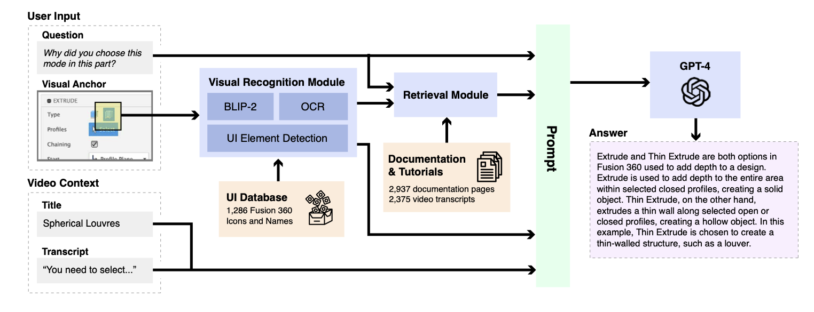
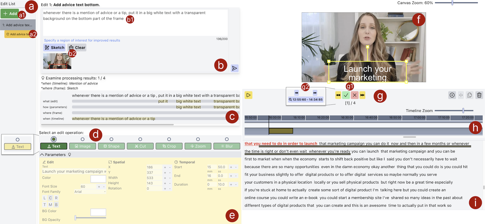
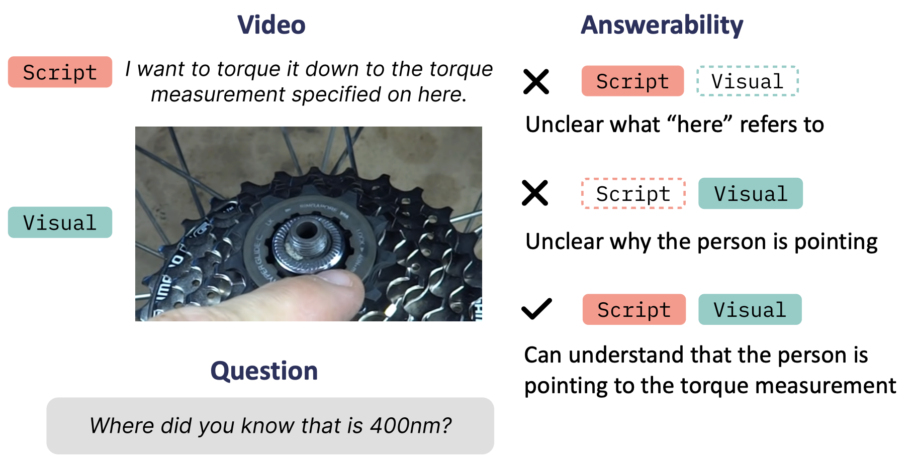
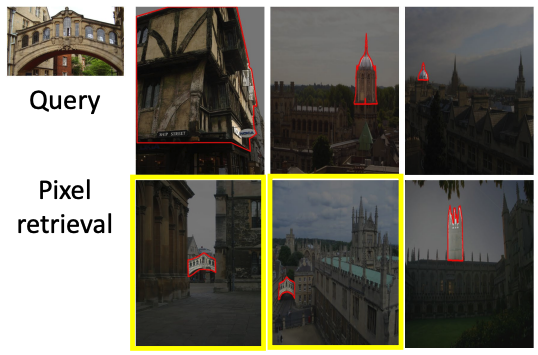
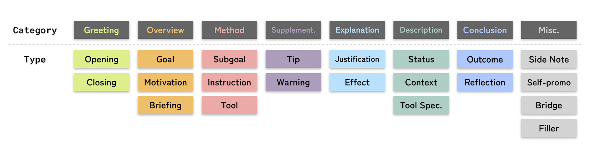
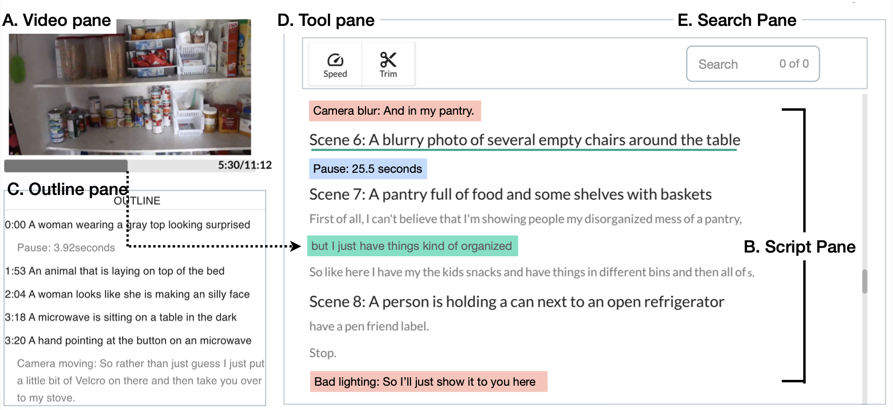
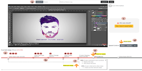
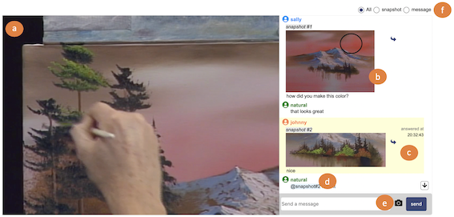
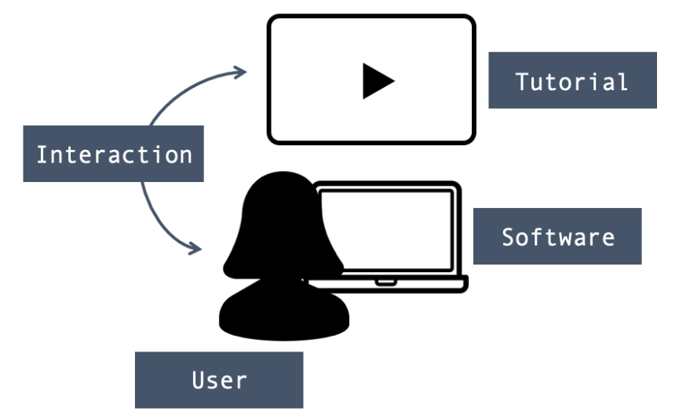
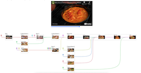

Hi! I am a Ph.D. student in the School of Computing at
KAIST. I am working with Juho Kim as part of KIXLAB.
My research interests in Human-Computer Interaction lie in video understanding and interaction. In particular, I leverage HCI and AI techniques to comprehend video content and aim to advance interactive technologies that empower users to create and consume video content more effectively. Recently, I have focused on Video QA and using generative AIs to help users create videos.
Keywords: Human-AI Interaction; Video Interaction; Multimodal Understanding; Generative AIs
My research interests in Human-Computer Interaction lie in video understanding and interaction. In particular, I leverage HCI and AI techniques to comprehend video content and aim to advance interactive technologies that empower users to create and consume video content more effectively. Recently, I have focused on Video QA and using generative AIs to help users create videos.
Keywords: Human-AI Interaction; Video Interaction; Multimodal Understanding; Generative AIs
News
- 📝 (Jan. 2024) My Autodesk internship paper has been accepted to CHI 2024!
- 📝 (Dec. 2023) Our paper on AI-assited video editing has been accepted to IUI 2024!
- 📝 (Dec. 2023) My LG AI internship paper on Video QA has been accepted to AAAI 2024!
- 👩💼 (Sep. 2023) Gave talks on video interaction at University of Toronto and UBC!
- 📝 (Jul. 2023) A paper I collaborated on has been accepted to ICCV 2023!
- 👩💼 (Jun. 2023) Serving as a Video Previews Co-Chair for UIST 2023!
- 👩💻 (Jun. 2023) Started my research internship @ Autodesk in Toronto!
- 🛫 (Apr. 2023) Attending CHI 2023 to present our paper!
- 📝 (Jan. 2023) Two papers are accepted to CHI 2023!
- 🏆 (Dec. 2022) I received a NAVER PhD Fellowship Award!
- 🏆 (Oct. 2022) I received a Special Recognition for Outstanding Reviews at CSCW 2023.
Publications
Conference and Journal Papers

AQuA: Automated Question-Answering in Software Tutorial Videos with Visual
Anchors
(to appear)
CHI 2024

ExpressEdit: Video Editing with Natural Language and Sketching
(to appear)
IUI 2024

YTCommentQA: Video Question Answerability in Instructional Videos
(to appear)
AAAI 2024

Towards Content-based Pixel Retrieval in Revisited Oxford and Paris
ICCV 2023

Beyond Instructions: A Taxonomy of Information Types in How-to Videos
CHI 2023

AVscript: Accessible Video Editing with Audio-Visual Scripts
CHI 2023

CatchLive: Real-time Summarization of Live Streams with Stream Content and
Interaction Data
CHI 2022

SoftVideo: Improving the Learning Experience of Software Tutorial Videos with
Collective Interaction Data
IUI 2022

Snapstream: Snapshot-based Interaction in Live Streaming for Visual Art
CHI 2020

What Makes It Hard for Users to Follow Software Tutorial Videos?
HCI Korea 2020
Posters, Demos, and Workshop Papers

Improving Video Interfaces by Presenting Informational Units of Videos
CHI 2022 Workshop on Computational Approaches for
Understanding, Generating, and Adapting User Interfaces
Experiences
-
Autodesk Research
Reserach Intern, HCI & Visualization Group (Jun. 2023 - Sep. 2023)
Host: Jo Vermeulen, Justin Matejka, George Fitzmaurice -
LG AI Research
Reserach Intern, Advanced ML Lab (Oct. 2022 - Feb. 2023)
Host: Moontae Lee -
Adobe Research
Reserach Intern, Creative Technologies Lab (Jun. 2020 - Sep. 2020)
Host: Hijung Valentina Shin -
ACRYL
Software Engineer Intern (Jan. 2018 - Feb. 2018)
Awards & Honors
- Google Student Travel Grant (2023)
- NAVER PhD Fellowship (2022)
- Special Recognition for Outstanding Reviews (CSCW 2023)
- Special Recognition for Outstanding Reviews (CHI 2022)
- Inseong Fellow, KAIST (2021)
- An Outstanding TA Award, KAIST (2021 Spring, 2022 Spring)
- An Outstanding MS Thesis Award, KAIST (2021)
- Kwanjeong Scholarship (2019-20)
- Google WTM Scholarsip (2018)
- Dean's List, School of Computing, KAIST (2018 Spring)
Education
-
Ph.D. in School of Computing, KAIST (Mar. 2021 - Present)GPA: 4.16/4.3, Advisor: Prof. Juho Kim
-
M.S. in School of Computing, KAIST (Mar. 2019 - Feb. 2021)An Outstanding MS Thesis Award, Advisor: Prof. Juho Kim
-
B.S. in School of Computing, KAIST (Mar. 2015 - Feb. 2019)Magna Cum Laude